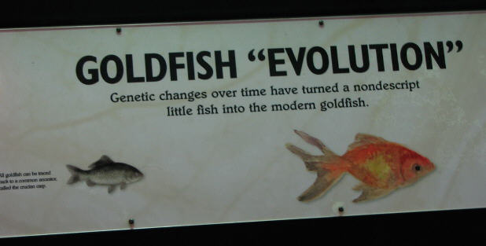

| Feature Article - December 2004 |
| by S. Chandler |
We don't really want to call it "bait-and-switch", but we do want to caution you not to swallow the goldfish tale.
|
 When visiting a natural history museum or scientific exhibition, you may run into a display similar to this one at the San Francisco Exploratorium, claiming to explain how fish have evolved. |
Before you go running out to get your Darwin-fish-with-legs emblem for your car, you should be aware that this particular exhibit shows how evolutionists use well-known scientific facts (in this case, the genetic variation of one kind of creature) to establish an unknown, speculative process (in this case, the transformation of one kind of creature into another). Since there aren't any real examples of fish-to-amphibian evolution to show you, they create these misleading displays. If there were a better example, they wouldn't be showing you goldfish.
With this particular display, they covered their bases pretty well. If you were to approach the museum staff and tell them that this goldfish display is not really an example of Darwinian evolution, they could reasonably argue that this is just an exhibit about breeding. After all, they did put "evolution" in quotes.
Despite that, it seems clear that their intention is to show people an ancient-looking "common ancestor" fish and infer that over the centuries it has changed and is well on its way to becoming an altogether new creature. The real intention of this exhibit is to put in a plug for Darwinism, not to explain breeding.
If the museum's intention were to teach people about breeding, they could have simply replaced the title "Goldfish Evolution" with "Carp Breeding". Instead of showing a picture of a speculative ancestor, they could have shown pictures and details of the carp-breeding process, along with a bowl of live goldfish to catch the visitors' attention. The exhibit would have shown that although breeding can cause dramatic changes in appearance, there are limits to those changes. Clearly, that wasn't their intention. They wanted to make people think there are actual examples of Darwinian evolution.
The only thing this exhibit really has to do with Darwinism is that it shows how Darwin mistakenly thought that genetic variations proved all forms of life came from one common ancestor. Looking at the physical appearance alone, it may appear that some different kinds of creatures did come from one common ancestor. Looks can be deceiving. Looks deceived Darwin.
People have been breeding plants and animals for centuries, long before they knew anything about how breeding really works. Breeding has shown us that there can be many variations within a species; however, this variation comes from information already present in our genes. (Various forms of a particular gene are called "alleles.") Nothing essentially new or novel is created. Variations with special characteristics are produced by combining existing alleles which have the desired characteristics, and/or eliminating dominant alleles which inhibit the expression of the desired characteristic.
Some creatures, such as dogs, have physical variations that are very extensive. In other living things, the extent of variation within a gene pool is rather limited.
Most people who have taken a biology course have heard of Gregor Mendel's (1822-1884) "Law of Segregation" which proposes a theory about dominant, recessive, and incompletely dominant genes. Unlike Darwin's theory, Mendel's law is a scientific theory, which has been experimentally verified many times. It correctly predicts the probability that offspring will inherit particular genes.
Although they lived around the same time, Darwin was not aware of Mendel's exhaustive work and believed, as most prominent scientists did in the 19th century, the "blending theory" that inherited traits blend from one generation to the next, allowing changes to accumulate over time.
The museum exhibit would be much more informative if it showed what happened when orange goldfish are mated with black-and-white speckled goldfish, and what happens when those offspring breed. The museum could have used goldfish to show that the blending theory was wrong.
Furthermore, when creatures are permitted to reproduce on their own (without the interference of humans), the specialized variations will eventually revert back to the general form. Darwin knew this, and even cited it as a problem for his theory. 1
|
"It is certainly true that if allowed to reproduce in the wild, without the intervention of man, the goldfish will, over a few generations, revert to something very closely resembling the crucian carp." 2 |
Does this mean, by random chance, goldfish evolve back into crucian carp fish when left in the wild? No, it means that if you keep orange goldfish, and red goldfish, and black-and-white spotted goldfish, in the same tank, that after several generations you will have fewer of the distinctively colored variations, and more of the "average" looking goldfish because the genes in the gene pool will be more evenly mixed.
Serious evolutionists know grand changes in organisms (macro-evolution) don't come from shuffling the existing gene pool around. If that were true, Darwinism could be proved by experimentation. But after centuries of gene shuffling and genetic recombination, goldfish are still just visually distinct carp fish. Evolution requires new, different genes.
Mutations (that is, "copying errors") sometimes occur as part of the cell reproduction process. When these copying errors occur in the reproductive cells there is a chance the offspring can be affected. This is supposedly how we, and all life on Earth, evolved from a simple single-celled organism.
Nobody doubts random genetic changes in organisms do occasionally occur, but they often have no noticeable effect. Often mutations are harmful. It is only in rare instances that mutations can be beneficial. We will look at each of these three possibilities in a moment.
First, we want to point out that cells, by their very nature, tend to discourage mutations. Cells are equipped with built-in checking and correcting mechanisms whose purposes are to minimize copying errors and prevent mistakes from being made. If mutations really were the creative source which powers evolution, then cells should have evolved a mechanism that promotes mutation--not the preventative mechanism that we actually find in living cells.
This genetic corrective system is like a spelling checker. Sometimes when you are typing fast, you may hit the wrong key, creating a different word than the one you intended. Usually, this word is misspelled, so it has no meaning. The spelling checker will tell you that you made an error, so you can correct it.
Occasionally, hitting the wrong key will result in a correctly-spelled word. This word has a different meaning than the one you intended. The spelling checker won't catch the error because the word is spelled correctly. But since the word you typed has a different meaning than the word you meant to type, the sentence containing it will not convey the information you intended. Rarely, if ever, will the erroneous word be better than the one you meant to type.
In living organisms, similar errors and mistakes happen to genetic "words" when cell reproduction occurs. Usually, the reproductive error will result in a "misspelled" word which the biological system will detect and automatically correct. Therefore, many mutations get corrected on the spot, and never see the light of day. But, on rare instances, the biological system will fail to detect the error, and the mutation will not be corrected.
When this happens in the reproductive cells, the offspring will inherit the mutation and will be different from the parents in some way. Perhaps the difference will be insignificant. If so, it will not provide any survival advantage, and therefore cannot be a factor in the evolution of the species.
Since nearly every feature of every creature has some useful purpose, the mutated feature will generally be less useful because it is broken. The unfortunate offspring will be less able to survive, and so survival of the fittest tends to eliminate the harmful mutation, preventing evolution.
Sometimes when things break, they can actually be beneficial. Suppose you have a car that doesn't have air conditioning, and you live in the desert. A broken car window could be beneficial. You wouldn't have to expend any energy to roll the window down to enjoy the cooling effect of breeze from the outside.
If you lived in Antarctica (or practically anywhere else, for that matter), the broken window would certainly not be beneficial. The warm air from the heater would escape, and you would be very uncomfortable or freeze to death. So, "beneficial" is a relative term that depends upon the circumstances.
When a biological molecule "breaks," it is usually harmful, but there are times when it, too, can be beneficial. For example, sickle cell anemia is a disease caused by a mutation in hemoglobin (red blood cells). Hemoglobin is responsible for transporting oxygen from your lungs to the rest of your body. The sickle-shaped hemoglobin cell differs from normal hemoglobin by a single amino acid. 3 This simple mutation "breaks" the hemoglobin molecule, so it doesn't carry oxygen through the blood system as efficiently as it should. For most people, having this mutation causes serious health problems because our bodies require oxygen to survive.
On the other hand, having inefficient hemoglobin actually benefits people who live where malaria is prevalent because malaria requires lots of oxygen. Therefore, people with sickle cell anemia are less likely to die from malaria, which clearly gives them a survival advantage over people with normal hemoglobin in malaria-infested regions of the world.
Even though sickle cell anemia can be a beneficial mutation in some cases, it isn't a creative mutation. The sickle cell hemoglobin molecule is an example of a mutation where the ability to carry oxygen is partially lost. The cell is broken, not enhanced.
Inefficient forms of existing things aren't what the theory of evolution requires. For the theory of evolution to be true, there must be mutations that create entirely new things from scratch. The theory of evolution needs an example of a mutation that creates the ability to carry oxygen (from the air to parts of the body not exposed to air) in an organism that did not previously have that capability.
If, as evolutionists believe, every characteristic of every living thing were formed by creative mutations, there ought to be abundant examples of these mutations because it would have had to have happened so often. There are no such examples.
Bacteria can resist anti-bacterial medicine the same way people with sickle cell anemia resist malaria. Since bacteria multiply very quickly, thousands upon thousands of generations arise in a very short order of time. Beta-lactamases is part of the arsenal some bacteria have to fight penicillin (which they had even before penicillin was discovered). In some bacteria, such as Streptococcus pneumoniae, b-lactamases has never been identified and is capable of penicillin resistance because of a mutation in their penicillin-binding proteins. This causes interference and penicillin resistance results. The enzymes Isoniazid and DNA gyrase found in some bacteria similarly resist antibiotics as a result of mutation interference as well. These mutations achieve their benefit with just a one- or sometimes a two-point mutation, and the result of a mutation that interfered or broke a previously established function or interaction.
|
"Conventional explanations that randomly generated advantageous changes in complex characters accumulate one locus at a time are unconvincing on both functional and probabilistic grounds, because there is too much interconnectivity and too many degrees of mutational freedom." 4 |
The real issue isn't whether a mutation is beneficial or not. The real issue is whether a mutation is creative. That is, does the mutation create a new feature or system that never existed before? A mutation can certainly cause the eyes of a fish not to develop. If that fish lives in deep water, or in a cave, where there is no light, the loss of the eye isn't harmful. The scales that grow where the eye would be normally, might be less prone to infection or injury, so that mutation might be beneficial. The eyeless fish may even be able to survive better, but the mutation didn't create any new genetic information.
Evolution requires random mutation that creates entirely new, useful features. Mutations don't provide a method by which a jellyfish can evolve eyes and a backbone to become a fish.
Returning to our broken car window example, how difficult would it be to build a new window from scratch? Even if you had all the raw materials, making a glass window would be difficult. You need training and special equipment.
Without any training at all, a child can break the window. Even a completely mindless natural process (such as a hurricane) could break a car window. No special tools are required.
The fact that something can be broken by accident does not prove that something can be created by accident. This is the error evolutionists make. They show examples of things that have lost capability because they have been broken by accident, and incorrectly conclude that new capability can be created by accident.
Natural history museums sometimes have displays which use breeding and mutations to "prove" evolution. But they only tell part of the story, and they tell it in a misleading way. Breeding does shuffle existing genes, resulting in variations within a kind; but breeding creates neither new genes nor new kinds of animals. The theory of evolution requires some process by which new features (backbones, hair, lungs, eyes, immune systems, etc.) arise all by themselves, apart from conscious design. There is no such process. The "common ancestor" of all living things did not have a vast array of genes that could be modified to form new features. Genes for bones, eyes, and brains, had to form from scratch by accident, according to their belief.
Goldfish in a museum are not evidence that all forms of life evolved from a common ancestor. They simply show variation in an existing species.
| Quick links to | |||
|---|---|---|---|
| Science Against Evolution Home Page |
Back issues of Disclosure (our newsletter) |
Web Site of the Month |
Topical Index |
Footnotes:
1
Darwin, Origin of Species, 1859, Chapter 1
(Ev)
2
http://www.iowas.co.uk/Goldfish.html
3
http://www.umass.edu/microbio/chime/hemoglob/2frmcont.htm
4
James Shapiro, University of Chicago, "Molecular Strategies in Biological Evolution", A New York Academy of Sciences Conference, June 27-29, 1998, Rockefeller University, New York City
(Ev)